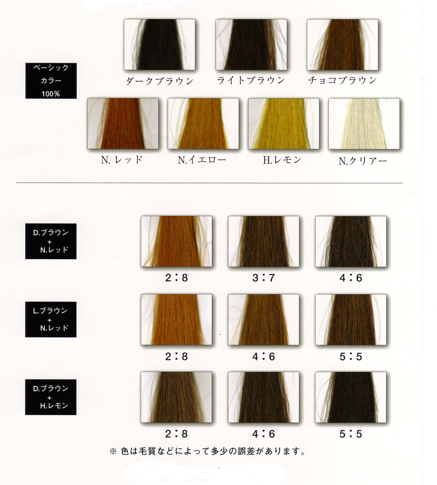

ヘナカラー

ヘナ（HENNA）とは
植物性の天然マニュキュアと言われ、
トリートメント とカラーの
相乗効果を持つ毛染めです。
西南アジアをはじめ、熱帯地方で
生育しています。
正式植物名”ローソニア”と
呼ばれる葉を粉末にしたものです。
通常のヘアダイ（ケミカル）との違い
・頭皮に色がつきにくい
・カブレの率が低い
・髪を傷めない
(初めての方はご来店いただき
パッチテストをお願いしております。）
白髪染めとして
1.根本から塗布出来るためリタッチに最適 。
2.頭皮についても安心。
3.自然な風合い。染めがナチュラル。
へナはへナの実に含まれている
色素（LOWSONE）
植物色素キノン系の派生である
ナフキノン類に分類される赤色色素で、
この色素はケラチンに絡みつく性質を
持っているので、毛質の主成分であり
毛髪内に存在するケラチンにこの色素が
絡みつき染まります。
トリートメントとして
1.傷んだ毛髪を回復させ、
弾力を与えます。
2.抜群のツヤを与えます。
3.固い髪、クセ毛の手入れを
楽にします。
へナは毛髪のたんばく質（ケラチン）と
結合する際に毛表皮に絡みつくように
薄い被膜を形成し
キューティクルを保護するため、
トリートメント効果が高いのです。
歴史
紀元前、クレオパトラが
ヘナを愛用していた
話は特に有名。
またエジプ トからはヘナを描写した
紀元前時代の浮き彫りが
発見されるなど、その歴史は
数千年に及びます。
産地
原産地はインドをはじめ、ネパール、
パキスタン、イラン、
シリアなど西南アジア。
さらにはエジプト、モロッコなどの
北アフリカまで北緯10度〜30度線上に
分布しています。
また日本のお茶と同様、
産地や気候風土によっても
その品質が微妙に違っています。
へナの各国事情
・欧米 スーパーなどで手軽に購入でき、
自分で白髪染めなどに
使用す るほか、パーティなどに
出かける前、髪の色を整え、
髪に腰を与えボリュームを出す
目的として一般に広く愛用されています。
・インド 現在でも結婚式やめでたい
行事の時には、
ヘナで手足に美しい模様を染めています。
カラーチャート
（白髪に染めた場合の色見本です。
黒髪に染めた場合は、
ご自分の髪の色に
ヘナの色がのりますので
より暗くなります。 ）
白髪が少なめな方には
普通のヘアダイか
ヘアーマニキュアがよろしかと思います。
